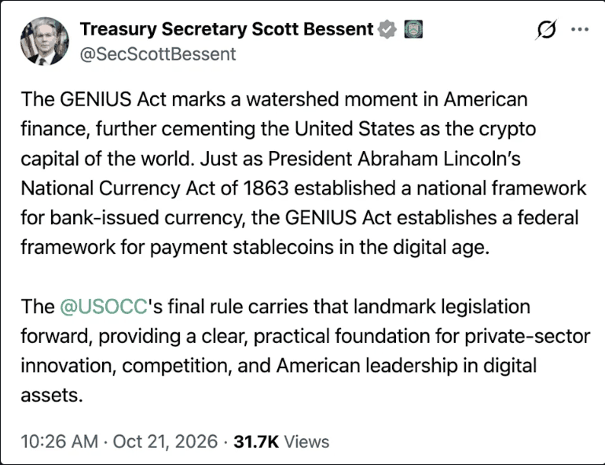

2026. 10
미국의 디지털 화폐 추격전략
CBDC가 아닌 스테이블코인을 택한 과정, 2019–2026
도입
1863년 국법은행법과 2025년 GENIUS법

- 2026.10.21 · OCC, GENIUS법 시행규칙 확정
- 베센트 재무장관 → 링컨의 국법은행법에 비유
| 1863 | 2025 | |
|---|---|---|
| 발행 | 민간 국법은행 | 민간 발행자 |
| 기준 | 통화감독청 신설 | 통화감독청 등 |
| 담보 | 연방 국채 예치 | 현금·단기국채 1:1 |
연구 질문
미국은 왜 CBDC가 아니라 스테이블코인을 택했나
2019.12
므누신·파월
향후 5년 연준 발행 불필요
2022.3
EO 14067
CBDC 검토 지시
2025.1
EO 14178
CBDC 금지 · 달러 스테이블코인 육성
2025.7
GENIUS법
스테이블코인 연방 규율
기술 실험은 앞섰고, 2022년 대응도 결정 → 결과는 민간 스테이블코인
3장 ① 대외 요인
디지털 화폐 경쟁
- 중국 e-CNY 시범 운영 → 국경 간 플랫폼 mBridge로 확장
- 달러 환거래망 우회 가능성 → 제재 효력 문제
- 2022 러시아 제재 이후 → EO 14067달러 지위·국가안보 차원의 검토 지시
“미국은 뒤처질 수 없다”
워터스 하원 금융위원장, 2022.5
다른 경제권이 CBDC를 갖고 미국만 없으면 미국의 위상이 약해질 수 있음
브레이너드 연준 부의장, 2022.5 (요지)
격차가 안보 문제로 인식되면서 → 추격의 필요
3장 ② 내부 요인
제도적 후발
앞섬
기술
보스턴 연준·MIT Hamilton
초당 170만 건 처리 (2022.2)
초당 170만 건 처리 (2022.2)
앞섬
시장
달러 스테이블코인
1,270억 달러 이상 (2021.10)
1,270억 달러 이상 (2021.10)
공백
제도
CBDC 발행 근거 없음 · 연준 “수권법 필요”
스테이블코인 법 없음 · 2021 입법 요구 후 미입법
스테이블코인 법 없음 · 2021 입법 요구 후 미입법
어떤 형태의 디지털 달러도 법적 틀이 없음 → 따라잡을 대상은 제도
4장 ① 추격의 최소 요건
시장에 있던 달러 스테이블코인
- 요건 ① 바로 쓸 수 있을 것2025년 월 거래량 대체로 2조 달러 이상
- 요건 ② 해외 달러 결제를 맡을 것페소·헤알 거래소 매입의 절반 이상
- 달러 패권 → 시장이 먼저 키운 수단


4장 ② 행위자 간 상호작용
의회·연준·은행의 조건
반대 이유
정부 원장에 의한 거래 감시 · 프라이버시
→
반영
연준 CBDC 발행 금지
민간 달러 자산은 예외
민간 달러 자산은 예외
→
결과
하원 216–192 (2024.5)
§1001 성립 (2026.7)
§1001 성립 (2026.7)
반대 이유
수권법 없이 발행 안 함 · 인출 쇄도 위험
→
반영
§4 준비자산 1:1
현금·단기국채, 상환, 공시
현금·단기국채, 상환, 공시
→
결과
발행은 민간
감독은 연준·OCC
감독은 연준·OCC
반대 이유
예금 이탈
→
반영
§4(a)(11) 보유만으로 이자 지급 금지
은행 자회사 발행 허용
은행 자회사 발행 허용
→
결과
eSLR 완화 (2025.11)
보상 범위는 미결
보상 범위는 미결
반대 이유 → 조항으로 반영 → GENIUS법 상원 68–30 · 하원 308–122 (2025.6–7)
4장 ③ 국가
국가 목표의 명시
2025.1
EO 14178
달러 주권 보호 수단 = 달러 스테이블코인 육성 · CBDC 금지
2025.6
OMB 정책성명
달러 지배력 강화 · 미 국채 수요 확대
2025.11
베센트 재무장관
시장 약 3,000억 → 3조 달러 (2030 전망) → 단기국채 수요
설계
GENIUS §18
역외 발행자도 미국 기준 · 미국 법원 명령 준수 능력
목표는 2022년과 같음 (중국 대응 · 달러 유지) → 수단만 교체
4장 소결
조건별 충족 상태
시점
| 조건 | 행위자 | 대응 조항 | 상태 |
|---|---|---|---|
| 프라이버시 | 의회 | CBDC 금지 + 민간 예외 | ○ 미해결○ 미해결금지법안 발의△ 진행하원 통과, 상원 미처리 |
| 안정성 | 연준 | §4 준비자산 1:1 | ○ 미해결은행 한정 발행 권고○ 미해결USDC 일시 이탈 (2023.3)● 충족 |
| 예금 이탈 | 은행 | §4(a)(11) 이자 금지 | ○ 미해결○ 미해결△ 부분발행자에 한정 |
| 국가 목표 | 행정부 | 국채 준비 · §18 역외 | ○ 미설정△ CBDC 검토EO 14067● 설정EO 14178 |
검증
대안 설명 검토
| 대안 설명 | 반대 근거 | 판단 |
|---|---|---|
| 정권교체 | CBDC 금지는 초당적 주택법에 실려 상원 85–5 · 대통령 서명 없이 성립연준 “수권법 필요” 입장은 2021–2023 일관 | 기각 |
| 기술 결정론 | Hamilton 초당 170만 건 → 기술 부족 아님 | 기각 |
| 시장 자율 | 달러 지배력·국채 수요를 목표로 명시한 것은 국가EO 14178 · OMB 정책성명 | 기각 |
결론
결론
- 첫째, 디지털 화폐 경쟁 + 제도적 후발 → 추격의 필요
- 둘째, 최소 요건과 행위자 조건을 함께 통과한 수단 → 스테이블코인
- 셋째, 발행은 민간 · 기준과 목표는 국가 → 달러 체계의 전략적 성격 강화
| 1863 | 2025 | |
|---|---|---|
| 발행 | 민간 은행권 | 민간 코인 |
| 담보 | 연방 국채 | 단기국채 |
| 기준 | OCC | OCC 등 |
전망
남은 조건과 일정
2026.9.15
CLARITY법
상원 절차표결 49–50 부결 · 쟁점: 스테이블코인 보상
2026.10.21
OCC 최종규칙
제3자 보상 위반 추정 삭제 → 사례별 심사
2026.10
GENIUS §18
해외 규제 동등성 판정 0건
2027.1.18
발효
GENIUS법 · OCC 규칙 시행
은행 조건 · 역외 규율 미결 → 조건이 안 채워진 곳에서 지연 재발 가능